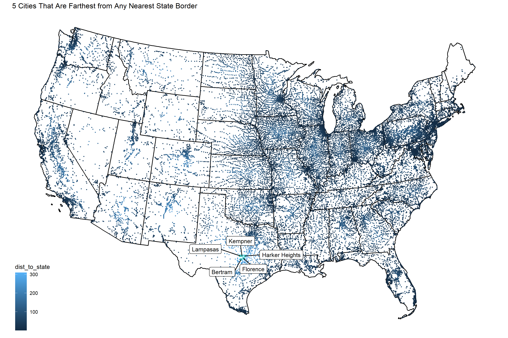
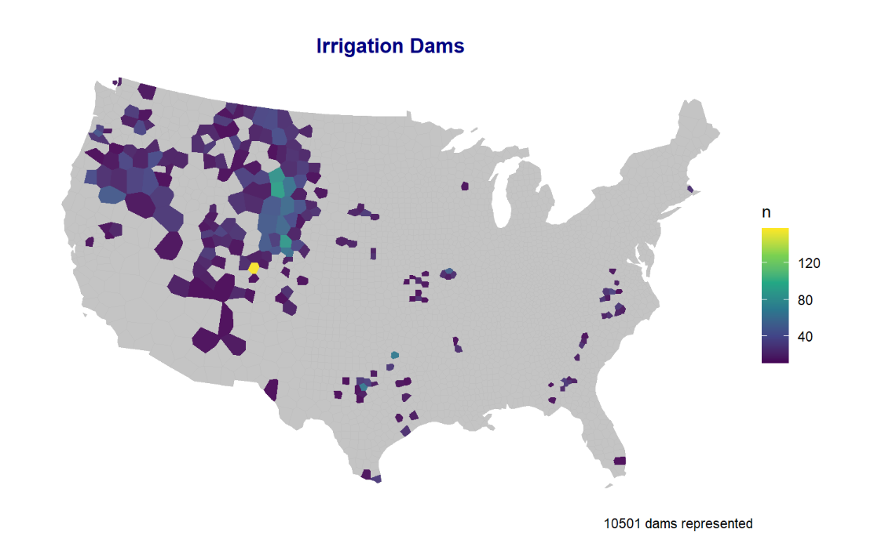
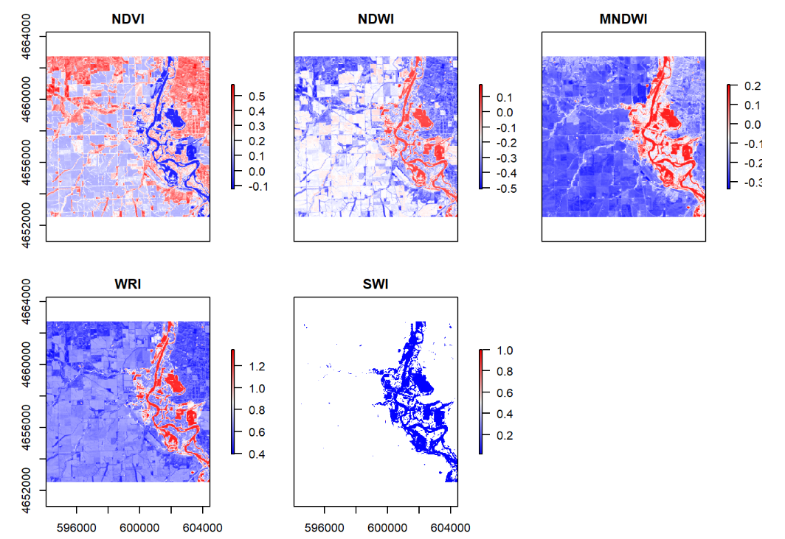
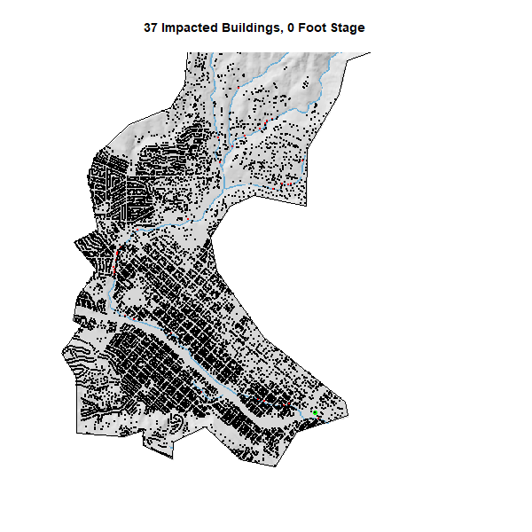

In summer 2020, I decide to take the geography 176A course which teaches me some basic knowledge of GIS. I learn this course based on R and I write some codes to practice. Here is something of what I have done.
In this assignment I learn how to build my web page of this course with github.
I use the learning points from last class which taught me how to use terminal commands.
I also work with Rmarkdown I installed in the first class to help finish this work.
lab02 -In lab 02, I learned about data.frame manipulation by using using real-time COVID-19 data to practice data wrangling and visualization skills.
lab03 -In lab 03, I learned about geos measures and I plot maps of America, Mexico and Canada in different ways. 
lab04 -In lab 04, I learned about how geometry simplication, centroid generation, and tesselations work and research on National Dams. 
lab05 -In lab 05, I learned about raster analysis and study a flood event. 
lab06 -In lab 06, I learned about terrain Analysis and also learned how to make gif pics. 